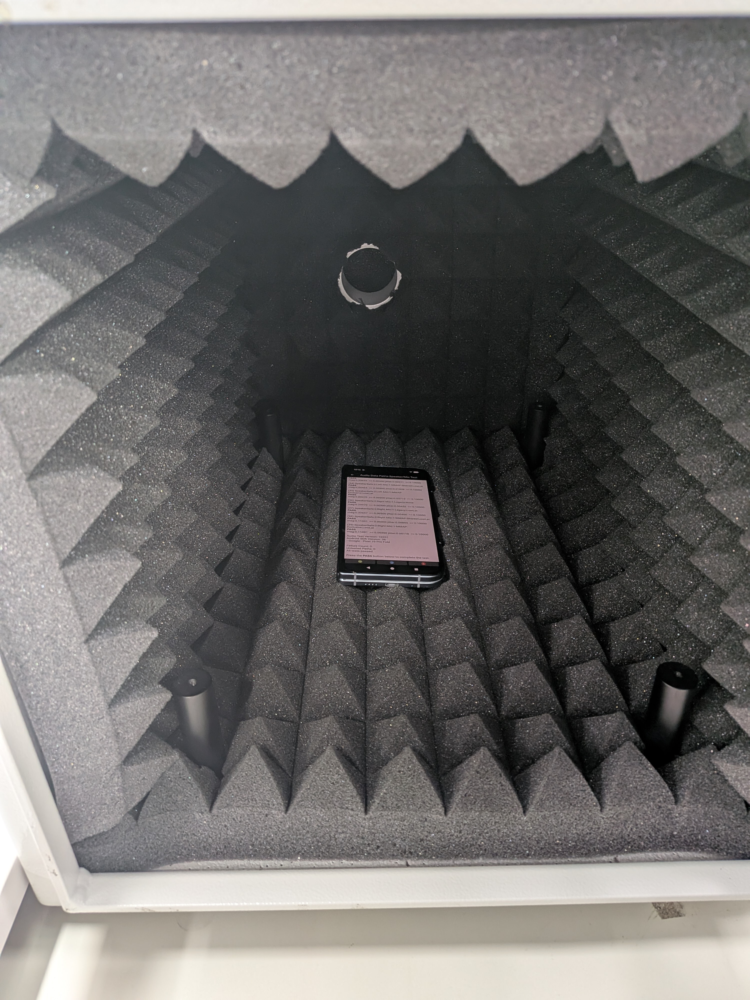

This test verifies basic functionality over the internal speakers and microphone.
Test Setup:
• It may be necessary to go to the "Sound & vibration" settings panel to set the volume
level for the output device.
• With no audio peripherals connected, adjust the "Media volume" to max.
• Make sure speakers and microphones are not covered.
• Place the DUT in a quiet environment with minimal reflection and vibration. An acoustic
anechoic box is ideal.
